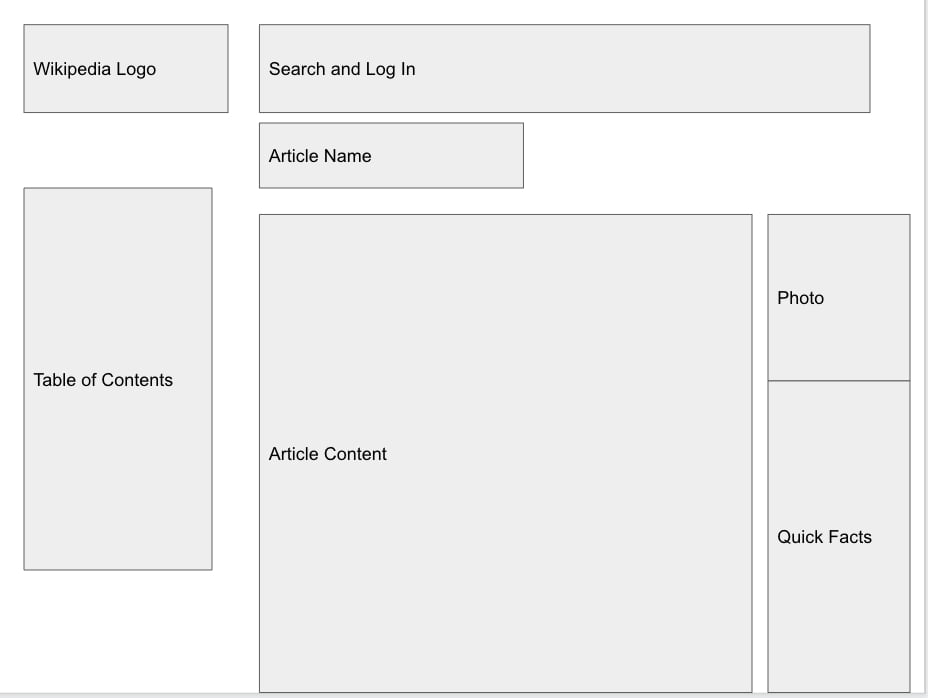
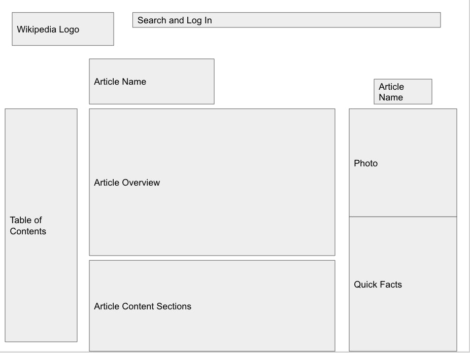

-
Using the favorite website you chose in homework 1, create a wireframe for one page of it using pen/paper, PowerPoint, or any your tool of choice. (use the 'img' tag!) Make sure to let us know what the name of your website is (Use the 'p' tag!)

-
Try to improve the website you've chosen, and create a redesigned wireframe of one page for the same website using the principles of visual hierarchy that you learned from the article.

-
What is the goal of the website? Who is it intended for? How does the design accomplish this? Write 2-3 sentences answering these questions. (Use the 'p' tag again!)
The goal of this website (Wikipedia) is to provide individuals with detailed overview information on almost any topic in existence. It's basically an encyclopedia that is located on the internet. This website is intended for the general public since the information is bootstrapped from the general population and doesn't have to follow the requirements of a research paper. The design accomplishes this by providing very simply defined sections along with lots of photos accompanying the text. The information is easily accessed through the table of contents and people can jump to other pieces of information through the hundreds of links displayed on each page.
-
Write 2-3 sentences about what problems your redesign addressed, and how it solved them.
My redesign was primarily aimed at focusing on the overview information that Wikipedia provides. Since it is not a research paper and it is open source available to the public, most people come to Wikipedia to learn about a topic at a general level. It's good that Wikipedia provides the detail, but I think the focus could be on the Quick Facts page (enlarged and more wide) with the photo on top. The search bar could be smaller and the table of contents should take up much less space on the left side. This makes the Wikipedia page look more concise and appealling to the eyes focusing on concepts like hierarchy.
NOTE: Make sure to include the wireframe images in the website and don't just put it in your assets folder!
Your wireframes should look something like this: